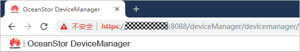

为了确保本产品与存储设备交互的安全性，可以将存储设备证书导入到系统中。此操作为可选操作。
存储设备CA证书的获取方式如下。
- 方式1：向设备管理员获取。
- 方式2：自行下载华为存储设备证书，其他存储设备请向设备管理员获取。以下以获取华为存储设备CA证书为例进行说明。
- 在浏览器中输入待获取证书的存储设备DeviceManager登录地址，浏览器提示不安全（Microsoft Edge提示为“证书错误”）。
- 单击url输入栏左侧的“不安全”。

- 在弹出的提示框中单击“证书”，查看颁发者是否为Huawei IT Product CA。

- 请单击此处获取名为“Huawei Equipment Root CA.pem”的证书文件。